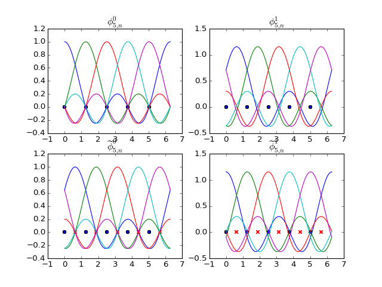

Mapping¶
Helper Functions¶
- dec.spectral.alpha0(N, x)[source]¶
- \[\begin{split}\alpha_{N}(x)=\frac{1}{N} \begin{cases} \cot\frac{x}{2}\,\sin\frac{Nx}{2} & \text{if N even,}\\ \csc\frac{x}{2}\,\sin\frac{Nx}{2} & \text{if N odd.} \end{cases}\end{split}\]
- dec.spectral.beta0(N, x)[source]¶
- \[\begin{split}\beta_{N}(x)= \begin{cases} \frac{1}{2\pi} -\frac{1}{4}\cos\frac{Nx}{2} + \frac{1}{N}\sum\limits_{n=1}^{N/2} \frac{n\cos nx}{\sin\frac{n\pi}{N}} & \text{if N even,}\\ \frac{1}{2\pi} + \frac{1}{N}\sum\limits_{n=1}^{(N-1)/2} \frac{n\cos nx}{\sin\frac{n\pi}{N}} & \text{if N odd.} \end{cases}\end{split}\]
- dec.spectral.rho(N, n, x)[source]¶
- \[\rho_{N, n}(x) = 2 \gamma_{2N-2, n}\delta_N(x) + 2 \gamma_{2N-2, N-n-1} \delta_N(\pi-x)\]
- dec.spectral.gamma(N, k)[source]¶
- \[\begin{split}\gamma_{N, n} = \int_0^{\frac{h}{2}=\frac{\pi}{N}} \beta_{N,n}(x) \, dx = \begin{cases} \frac{1}{2N} - \frac{(-1)^k}{2N} + \frac{1}{N}\sum\limits_{n=1}^{N/2} \frac{\sin(2 k n \pi/N) - \sin((2 k-1) n \pi/N)} {\sin\frac{n\pi}{N}} & \text{if N even,}\\ \frac{1}{2N} + \frac{1}{N}\sum\limits_{n=1}^{(N-1)/2} \frac{\sin(2 k n \pi/N) - \sin((2 k-1) n \pi/N)}{\sin\frac{n\pi}{N}} & \text{if N odd.} \end{cases}\end{split}\]
Periodic Basis Functions¶
- dec.spectral.phi0(N, n, x)[source]¶
Basis functions for primal 0-forms.
\[\phi_{N,n}^{0}(x)=\alpha_{N,n}(x)\]
- dec.spectral.phi1(N, n, x)[source]¶
Basis functions for primal 1-forms.
\[\phi_{N,n}^{1}(x)=\beta_{N,n+\frac{1}{2}}(x)\]
- dec.spectral.phid0(N, n, x)[source]¶
Basis functions for dual 0-forms.
\[\widetilde{\phi}_{N,n}^{0}(x)=\alpha_{N,n+\frac{1}{2}}(x)\]
- dec.spectral.phid1(N, n, x)[source]¶
Basis functions for dual 1-forms.
\[\widetilde{\phi}_{N,n}^{1}(x)=\alpha_{N,n}(x)\]
(Source code, png, hires.png, pdf)

Regular Basis Functions¶
- dec.spectral.kappa0(N, n, x)[source]¶
Basis functions for primal 0-forms.
\[\begin{split}\kappa_{N,n}^{0}(x) = \begin{cases} \alpha_{2N-2,n}(x), & n\in\{0,N-1\}\\ \alpha_{2N-2,n}(x)+\alpha_{2N-2,2N-2-n}(x), & n\in\{1,\dots,N-2\} \end{cases}\end{split}\]
- dec.spectral.kappa1(N, n, x)[source]¶
- \[\kappa_{N,n}^{1}(x) = \left( \beta_{2N-2,n+\frac{1}{2}}(x)- \beta_{2N-2,2N-3-n+\frac{1}{2}}(x)\right) \mathbf{d}x,n\in\{0,\dots,N-2\}\]
- dec.spectral.kappad0(N, n, x)[source]¶
- \[\widetilde{\kappa}_{N,n}^{0}(x)= \alpha_{2N-2,\, n+\frac{1}{2}}(x)+ \alpha_{2N-2,\,2N-3-n+\frac{1}{2}}(x),\quad n\in\{0,\dots,N-2\}\]
- dec.spectral.kappad1(N, n, x)[source]¶
- \[\begin{split}\widetilde{\kappa}_{N,n}^{1}(x)= \begin{cases} \delta(x)\mathbf{d}x & \qquad n=0\\ \left(\beta_{2N-2,n}(x)-\beta_{2N-2,2N-2-n}(x)-\rho_{N,n}(x)\right)\mathbf{d}x & \qquad n\in\{1,\dots,N-2\}\\ \delta(\pi-x)\mathbf{d}x & \qquad n=N-1 \end{cases}\end{split}\]
Even 0-forms, Odd 1-forms

Chebyshev Basis Functions¶
- dec.spectral.psi0(N, n, x)[source]¶
Basis functions for primal 0-forms.
\[\psi_{N,n}^{0}(x)=\kappa_{N,n}^{0}(\arccos(-x))\]
- dec.spectral.psi1(N, n, x)[source]¶
Basis functions for primal 1-forms.
\[\psi_{N,n}^{1}(x)\mathbf{d}x= \kappa_{N,n}^{1}(\arccos(-x))\frac{\mathbf{d}x}{\sqrt{1-x^{2}}}\]
- dec.spectral.psid0(N, n, x)[source]¶
Basis functions for dual 0-forms.
\[\tilde{\psi}_{N,n}^{0}(x)=\tilde{\kappa}_{N,n}^{0}(\arccos(-x))\]
- dec.spectral.psid1(N, n, x)[source]¶
Basis functions for dual 1-forms.
\[\tilde{\psi}_{N,n}^{1}(x)\mathbf{d}x=\tilde{\kappa}_{N,n}^{1}(\arccos(-x))\frac{\mathbf{d}x}{\sqrt{1-x^{2}}}\]
(Source code, png, hires.png, pdf)

\(\psi^0\) and \(\widetilde{\psi}^0\) match the Lagrange polynomials
- dec.spectral.lagrange_polynomials(x)[source]¶
Lagrange Polynomials for the set of points defined by \(x_m\). The Lagrange Polynomials are such that they are 1 at the point, and 0 everywhere else.
\[\psi_{n}^{0}(x)=\prod_{m=0,m\neq n}^{N-1}\frac{x-x_{m}}{x_{n}-x_{m}}\]>>> L = lagrange_polynomials([0, 1, 2]) >>> [l(0) for l in L] [1.0, 0.0, -0.0] >>> [l(1) for l in L] [-0.0, 1.0, 0.0] >>> [l(2) for l in L] [0.0, -0.0, 1.0]


{kind=link}
{kind=link}
{kind=link}
{kind=link}
{kind=link}
{kind=link}
{kind=link}
{kind=link}
{kind=link}
{kind=link}
{kind=link}
{kind=link}
{kind=link}
{kind=link}
{kind=link}
{kind=link}
{kind=link}
{kind=link}
{kind=link}
{kind=link}
{kind=link}
{kind=link}